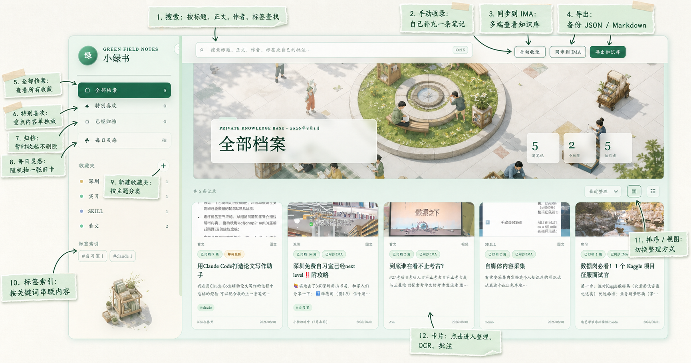
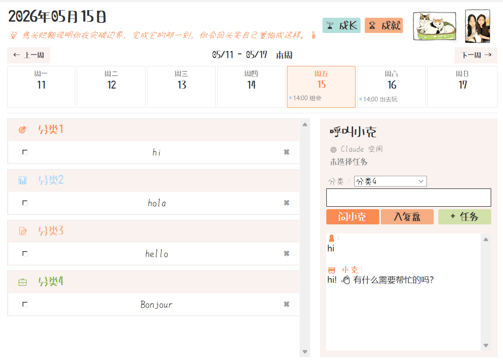
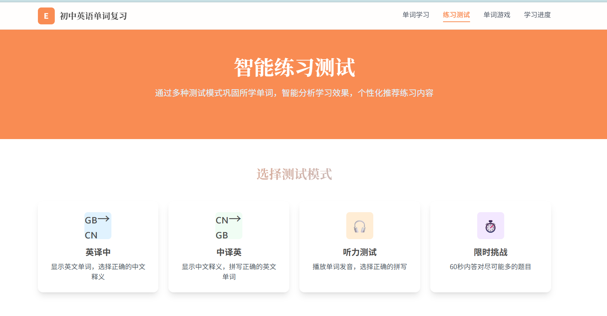

替换为你的真人照片
Kaitlin / Operations & AI
📍 广州
嗨，我是王莹 Kaitlin。
具备服务运营、品类运营与 AI 工具落地经验，习惯从用户反馈和业务数据中定位问题、推进协同与改进。
2027 届经济学硕士，具备服务点运营、海外品类运营与 AI 工具落地经验。
📍 广州
4 个公开项目，覆盖 AI 知识管理、效率工具、企业 RAG 与学习产品。点击任一项目，查看问题、方案与真实交付。

把小红书公开笔记一键收进本地知识库：图片 OCR、标签批注、全文搜索，再按需同步到 IMA。

面向研究生多线任务的 Windows 桌面工具，用 Claude 完成任务拆解、夜间复盘与成长反馈。
将产品、合同、售后与流程资料整理成可检索、可测试、守边界的 Dify 问答助手。

覆盖学习、测试、游戏与进度反馈的纯前端产品，承载 46 个单元、1,332 条词汇。